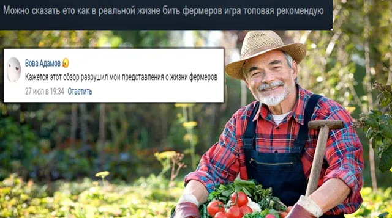
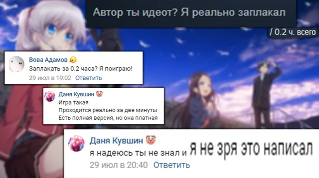
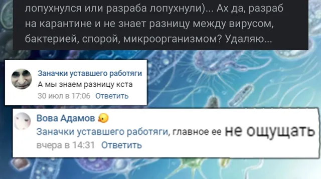
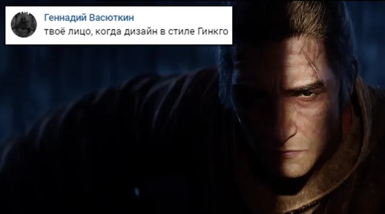
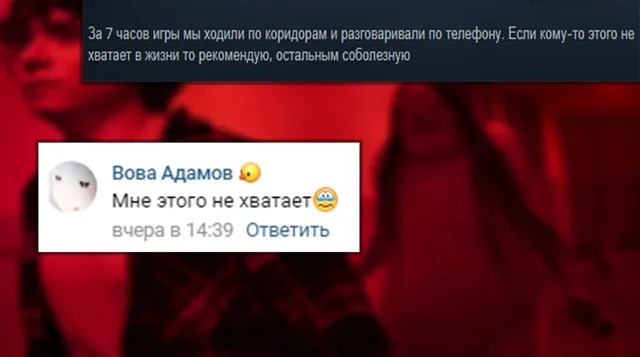
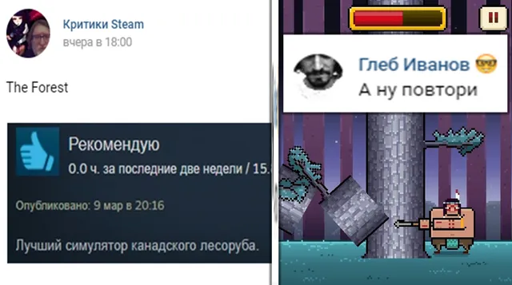
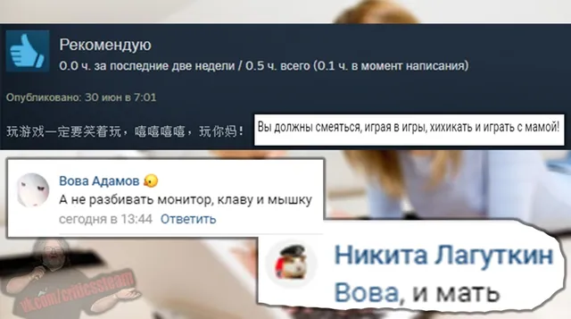

Ваши комментарии
ВКонтакте
🎼 И вот прошла еще одна неделя, дорогие, настало время ваших комментариев!
2 августа 2020 · №297 в выгрузке стены · оригинал во ВКонтакте ↗








#ВашиКомментарии@criticssteam #3
🎼 И вот прошла еще одна неделя, дорогие, настало время ваших комментариев!
На этой недели [https://vk.com/@criticssteam-sistema-titulov|титул Комментатора] получают:
[https://vk.com/thegreatgenndy|Геннадий Васюткин]
[https://vk.com/id119602395|Вова Адамов]
[https://vk.com/ionlylovemywaifu|Даня Кувшин]
[id191917835|Глеб Иванов]
[id284440935|Никита Лагуткин]
✅Всем большое спасибо за комментарии!
🎼 И вот прошла еще одна неделя, дорогие, настало время ваших комментариев!
На этой недели [https://vk.com/@criticssteam-sistema-titulov|титул Комментатора] получают:
[https://vk.com/thegreatgenndy|Геннадий Васюткин]
[https://vk.com/id119602395|Вова Адамов]
[https://vk.com/ionlylovemywaifu|Даня Кувшин]
[id191917835|Глеб Иванов]
[id284440935|Никита Лагуткин]
✅Всем большое спасибо за комментарии!